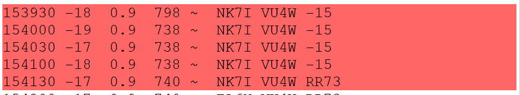

It's doable on 17, but it ain't easy. 1485 watts into 4 elements
at 60'. Band slot 2 is in the log!
GL,
Rick NK7I

Not loud here, a neighbor just worked them (lower noise floor than me), I'm just starting to decode them.
Not using F/H you can start your call with the signal report.
GL,
Rick NK7I
(and 20M still active 14.091, same drill)